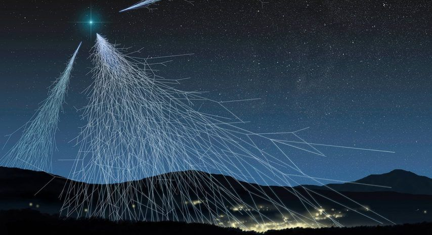

Asteroides Cercanos a la Tierra (NEAs)

Los rayos cósmicos, también llamados radiación cósmica son partículas que bombardean constantemente la Tierra
desde el espacio en todas las direcciones. Algunas de ellas son más energéticas que cualquier otra partícula
observada en la naturaleza. La mayoría de estas partículas masivas de alta energía son protones (p) o núcleos
de átomos ( α ).
Los rayos cósmicos ultraenergéticos viajan a una velocidad cercana a la de la luz y tienen cientos de millones
de veces más energía que las partículas producidas en el acelerador más potente construido por el ser
humano.

En general, los rayos cósmicos preceden fuera del Sistema Solar o nuestra galaxia. La dirección a la que
fueron lanzados los rayos cósmicos se habría modificado por una desviación del campo magnético de nuestra
galaxia.
Algunas fuentes potenciales de rayos cósmicos podrían ser supernovas, núcleos galácticos activos (AGN),
quarsars y chorros de rayos gamma γ (GRB).
En 2013, el análisis de los espectros de desintegración de pines neutros con los datos de Fermi reveló que las
supernovas sí son una fuente de rayos cósmicos, produciendo en cada explosión unos 1043 J de RCs.
Los rayos cósmicos se detectan indirectamente en la superficie de la Tierra, observando cascadas de partículas secundarias que se producen en el aire. Cuando una partícula cósmica choca con una molécula del aire se produce una cascada de miles de millones de partículas (RCs secundarios) que inciden sobre la superficie de la Tierra. Las características de las cascadas es que permiten obtener información sobre la energía, dirección y composición del rayo cósmico primario.
Casi todas las imágenes de un CCD incluirán algún número de rayos cósmicos. Algunos rayos cósmicos atravesarán
la atmósfera y llegarán a su detector (la tasa de rayos cósmicos será mucho mayor para las cámaras en el
espacio). Aunque el número de rayos cósmicos es más o menos proporcional al tiempo de exposición, habrá rayos
cósmicos incluso en marcos polarizados en los que el chip se lee inmediatamente.
La forma más conveniente de eliminar los rayos cósmicos de las imágenes de calibración (imágenes sesgadas,
oscuras y planas) es combinándolos adecuadamente. Un píxel afectado por un rayo cósmico en una de las imágenes
oscuras es poco probable que se vea afectado en alguna de las otras imágenes.
La combinación de esas imágenes promediando (para reducir el ruido tanto como sea posible) y el recorte sigma
(para excluir píxeles extremos en imágenes individuales como la que tiene un rayo cósmico) eliminará el rayo
cósmico de la imagen oscura combinada. Una alternativa sería combinar las imágenes utilizando una mediana. Una
descripción detallada de cada opción se discute en la sección sobre combinación de imágenes.
2022 - Página diseñada y desarrollada por el grupo de trabajo BUAP-INAOE del programa: Asteroides Cercanos a la Tierra (NEAs)